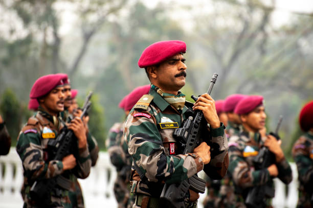
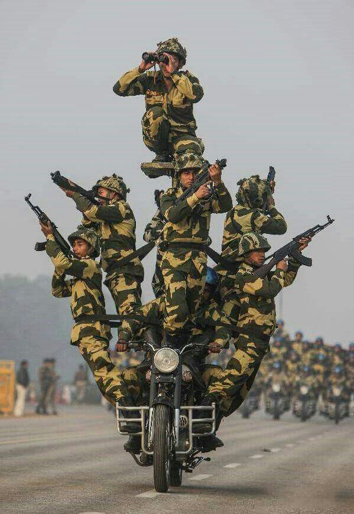

Oh Soldiers! I don't have words to thank you. It's their selfless love towards our nation that makes them to offer the supreme sacrifice for us! It's their bravery, courage, best skills, perfection and Excellency that makes them special and eligible to serve our motherland.
Indian Army
World's 4th largest and powerful military that is our Indian Defence Forces works in one of the world's toughest battle fields. They serve our country in extreme conditions. They are our real heroes. Presently it is one of the top militaries of the world and also having a glorious and decent history too!
Our Soldiers are our pride. They not only secures our borders but gives
selfless service by serving our nation in internal problems also, keep our
country's flag high in sports also. They also give their service at international
level by serving the mankind worldwide. Their contribution is countless
That’s what makes a perfect soldier.
These forces are meant to assist the Armed Forces of India.
These forces constitute the soldiers of Indian army and navy. And so on…..

They sacrifice everything for us and our country. They leave their family, friends,
home and all the comfort for securing our comfort. We Indians mostly forget their supreme
sacrifice and never try to understand their emotions and feelings. It’s our biggest fault.
We should be thankful for everything they do for us. We are not at all that great, we cannot
afford to pay the debt of their service and sacrifice!
Our great soldiers are the back bone of our country. It’s our moral duty to respect and love them.
Remember this- Oh fellow Indians, we are lucky and blessed that we have Indian Army!

I love Indian Military so much! I am proud of my armed forces. Thank you for protecting us. Thank you for sacrificing your everything for us. You are the saviours of Bharat Mata (INDIA). Thanks for being with us and protecting us in every situation. Thank you Indian Military.